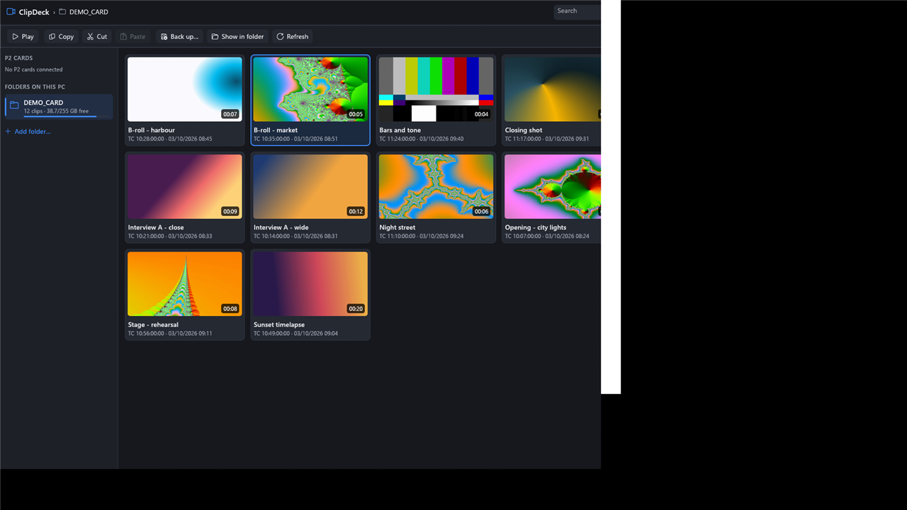

Your P2 card clips, simple and fast
ClipDeck is a lightweight Windows app for camera operators and editors who work with Panasonic P2 cards. Insert a card (in the camera or a card reader) or open a P2 folder you copied to your PC, and every clip shows up as a thumbnail you can play, sort and manage.

- See everything at a glance — real thumbnails, duration, timecode, shooting date, codec and camera details.
- Play with sound — double-click to play; all audio channels are mixed so you always hear the microphone, or pick CH1+2 / CH3+4.
- Copy, cut, paste, move and delete — every related file (video, all audio channels, metadata, icon, proxy) always travels with the clip, so no orphan files are left behind.
- Safe by design — copies are verified (size + checksum) before anything is removed, existing clips are never overwritten, and writing to a card always asks first.
- One-click backup — back up a whole card to a new P2 folder on your PC.
- Spanned clips — clips recorded across several files or cards are recognised and can be selected as a group.
- English and Vietnamese interface. No account, no internet connection, no data collection.
Quản lý clip thẻ P2 — đơn giản và nhanh
ClipDeck là ứng dụng Windows gọn nhẹ cho người quay phim và dựng phim làm việc với thẻ Panasonic P2. Cắm thẻ (trong máy quay hoặc đầu đọc thẻ) hoặc mở thư mục P2 đã chép vào máy, mọi clip hiện ra dưới dạng ảnh thu nhỏ để phát, sắp xếp và quản lý.
- Xem nhanh mọi thông tin — ảnh thu nhỏ thật, thời lượng, timecode, ngày quay, codec, thông tin máy quay.
- Phát có tiếng — nhấp đúp để phát; tự trộn mọi kênh âm thanh để luôn nghe được micro, hoặc chọn CH1+2 / CH3+4.
- Sao chép, cắt, dán, di chuyển, xóa — mọi tệp liên quan (video, các kênh âm thanh, metadata, icon, proxy) luôn đi cùng clip, không để lại tệp rác.
- An toàn — bản sao được kiểm tra (dung lượng + checksum) trước khi xóa nguồn, không bao giờ ghi đè clip có sẵn, và luôn hỏi trước khi ghi lên thẻ.
- Sao lưu một chạm — sao lưu cả thẻ sang một thư mục P2 mới trên máy.
- Giao diện tiếng Việt và tiếng Anh. Không cần tài khoản, không cần internet, không thu thập dữ liệu.